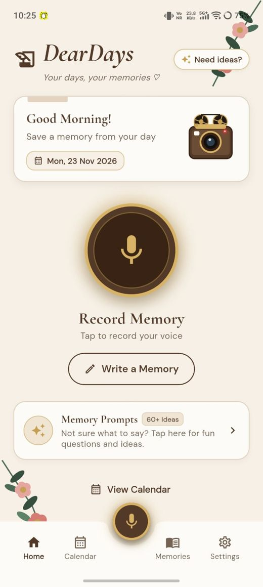
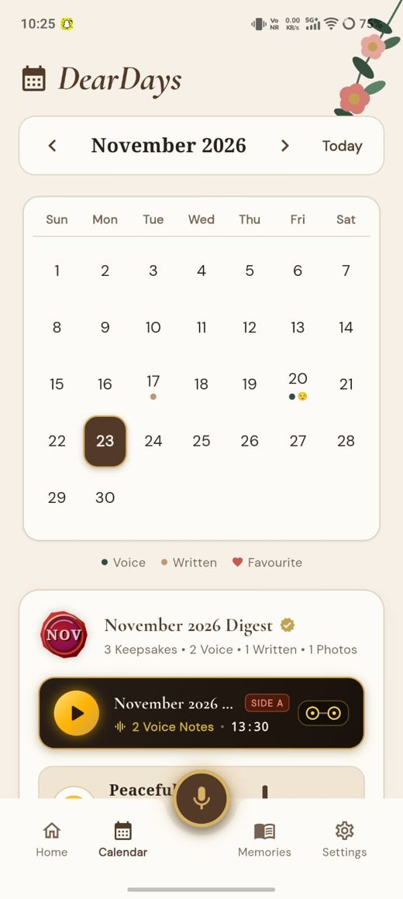
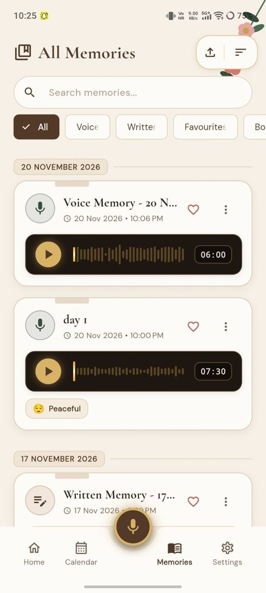
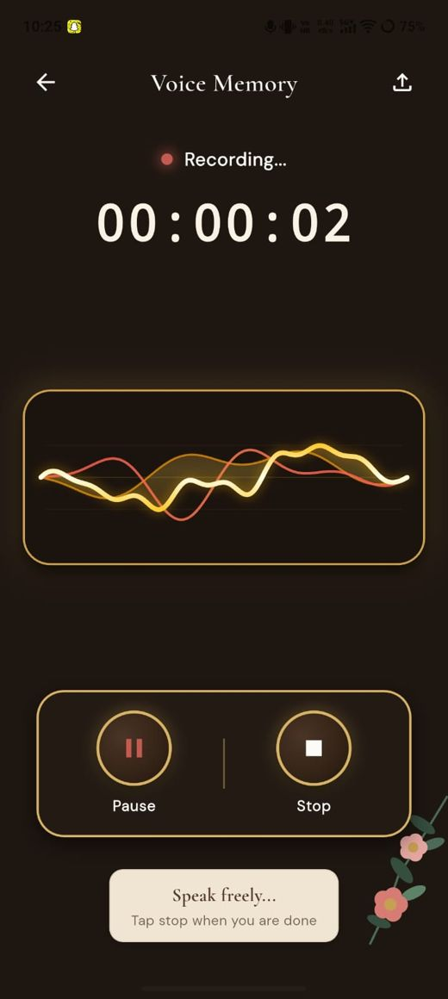
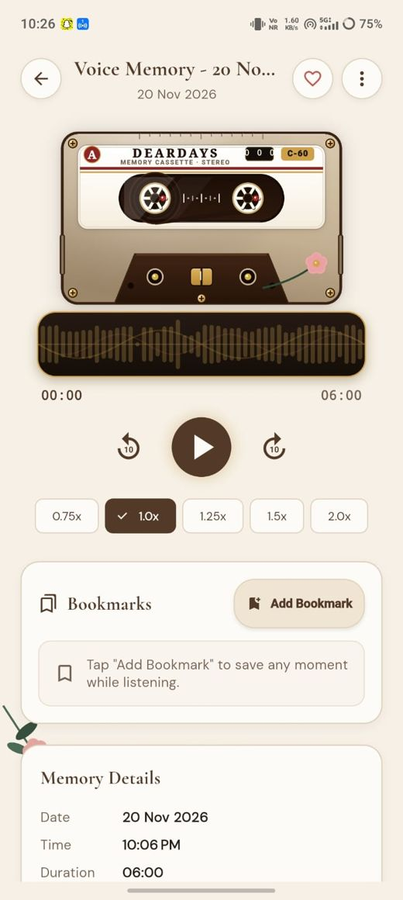
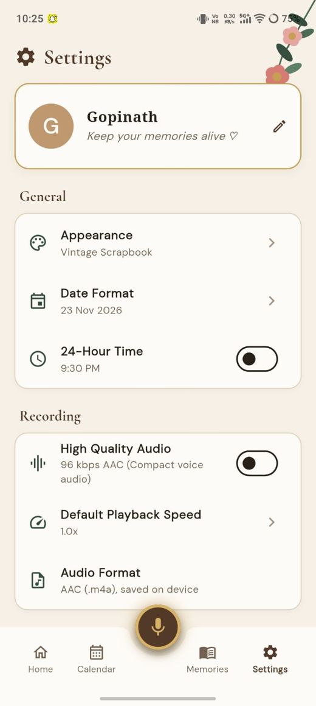

Your memories deserve a place to stay.
A little place for your thoughts, voices and moments worth keeping.


November
all my daysThree little ways to keep your memories.
Voice Memories
Capture the moments you want to hear again.

Written Memories
Give your thoughts a place to belong.
Memory Collection
Keep every little moment together.
Some moments are better heard again.
Press record and speak freely. Watch your voice become a glowing golden wave, then play it back on a vintage cassette.

Dear days, today felt slow and soft…
I want to remember how it felt.
😌 PeacefulWrite what your heart wants to remember.
One tap from the home screen opens a quiet page just for your words.
- Lined parchment writing space
- Mood badges for how the day felt
- Pick the date it belongs to
- Drafts are kept safe until you return
Every date holds a story.
A monthly calendar marks the days you recorded, wrote, or felt something worth keeping, with a monthly digest on its own mini cassette.
A collection of moments, all in one place.
Scrapbook cards with waveform previews and written excerpts. Heart your favourites, search, or filter by Voice, Written and more.
Every day begins with a little story.
Not sure what to say? 60+ gentle questions are one tap away.
- Surprise Me for a random question
- Save favourite prompts
- Record with a prompt
- Write with a prompt
"What was the smallest detail today that brought an unexpected smile?"
Your memories. Your little world.
100% offline
Nothing leaves your phone.
Local SQLite
Stored on your device.
Biometric lock
Only you can open it.
Five themes
Make it feel like yours.
Personal
Your name, your formats.
JSON backup
Take your memories with you.

One day, these little moments will mean everything.
Start collecting the stories that make your life yours.
DearDays-iOS-Release.ipa (52.7 MB, iOS). Direct Safari OTA installation requires an Ad Hoc signed build for registered iPhone UDIDs (or Enterprise signing). For public beta testing without device UDID registration, use TestFlight.Android 7.0+ (v1.0.0 · 75.4 MB) & iOS (52.7 MB) · 100% Offline & Private